INROT


Inrot is a one-man band from Espoo, Finland.
While dark, heavy and intense, that is not the sole purpose — as there is none.
It channels a mindset, an attitude, a way of life.
Lashing strikes of paradoxical existential questions, like a repeating pounding of a whip, tearing the flesh from humanity until its rotten core drowns in its own blood.
Everything is excuses. Nothing is the truth.